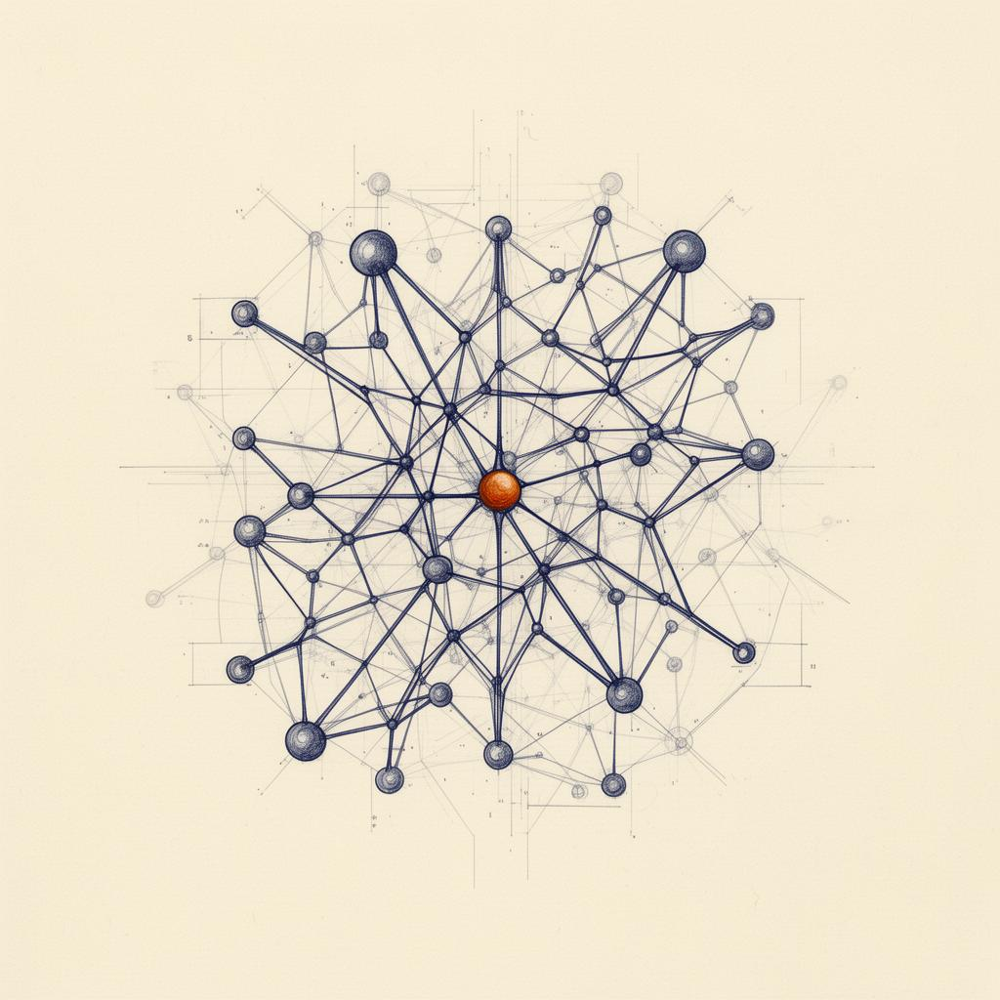
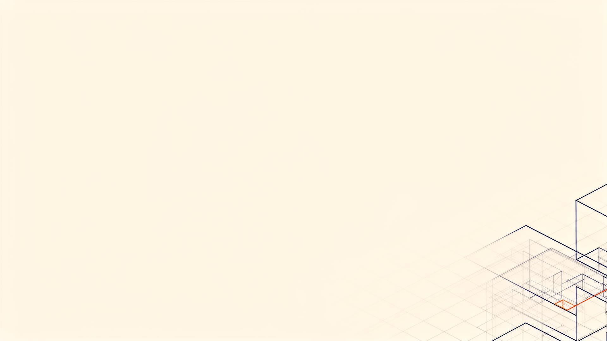
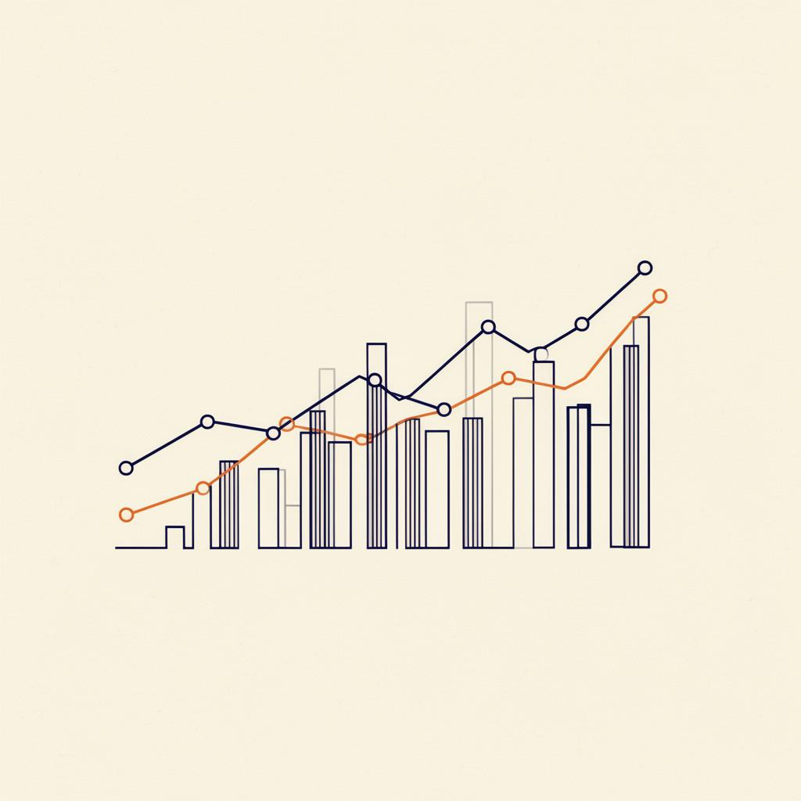
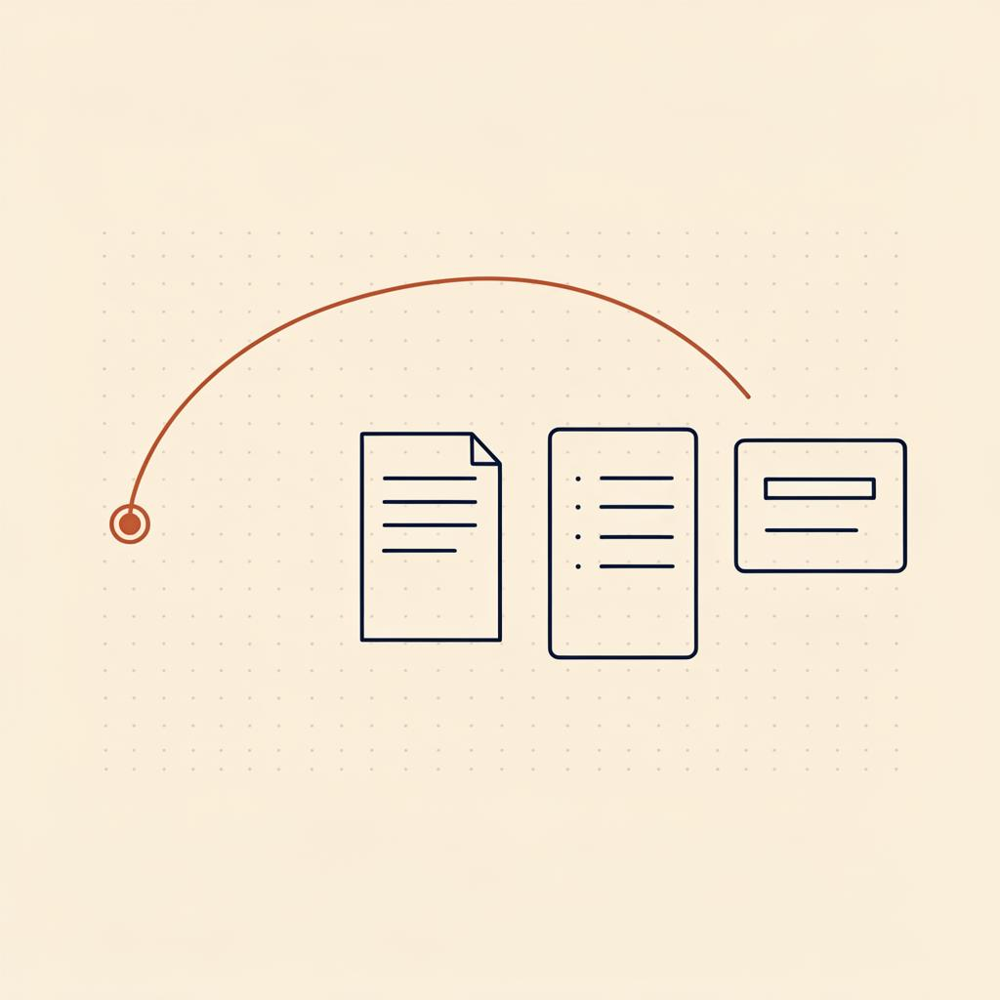
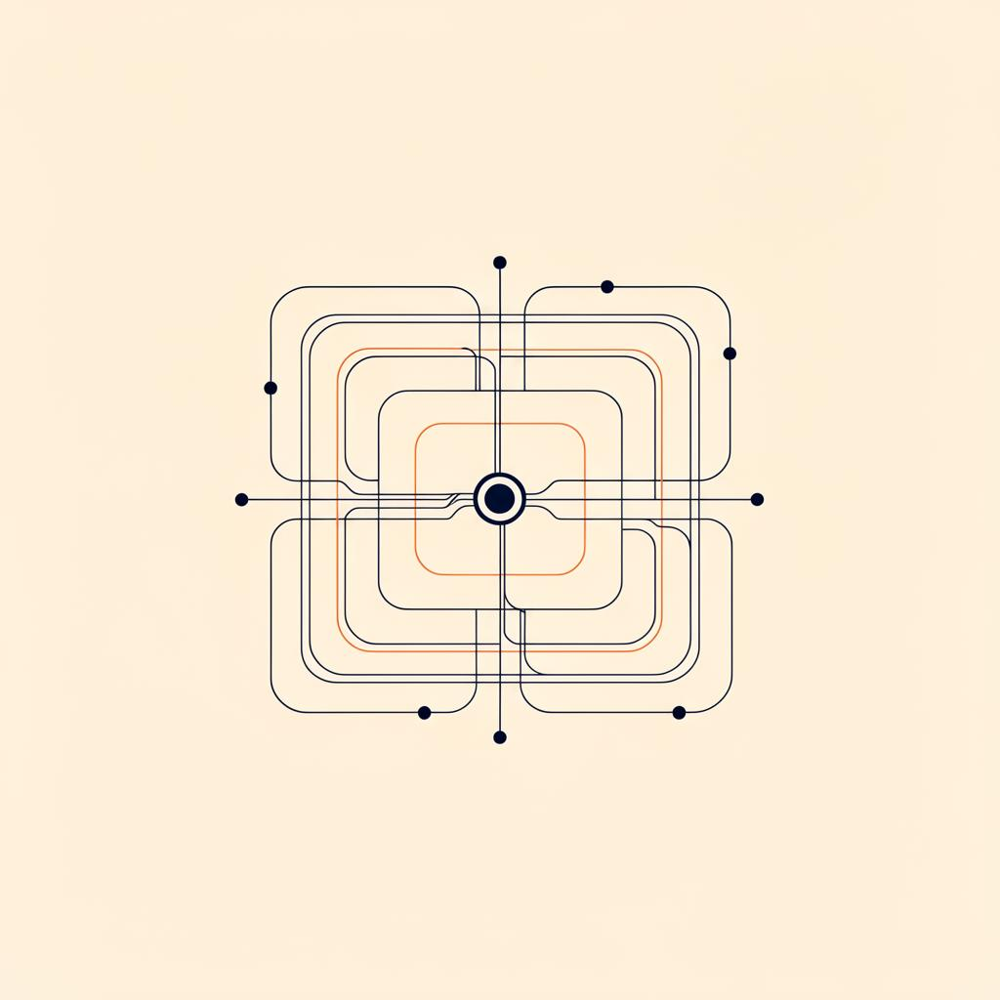

01
Applied AI Systems Engineering
Build strong machine learning capability with clear foundations and practical implementation.


Axisora Forge · Academy
Axisora Forge is a focused learning academy for people who want technical education to feel clear, practical, and professionally meaningful. We offer carefully structured role-based programs in Applied AI Systems Engineering, Data Intelligence Engineering, Generative AI Product Engineering, and AI-Enabled Java Backend Engineering for learners who want stronger direction, better application, and learning that feels worth the effort.
MASTER SKILLS · BUILD CONFIDENCE · GET AHEAD
Role-based programs
Mentor-guided learning
Applied technical practice
Career Lab integration
Programs
Our programs are designed to help learners enter valuable areas of modern technology with stronger orientation, practical depth, and clearer role alignment. Each direction is built to support understanding, implementation, and long-term relevance.
01
Build strong machine learning capability with clear foundations and practical implementation.

02
Develop analytical capability through structured data work, reporting discipline, and decision-focused implementation.

03
Learn to build useful generative AI workflows and AI-powered product experiences with practical direction.

04
Build modern Java backend systems with strong engineering foundations and AI-linked application features.

The Model
Learning is organized around clear technical goals so progress feels more coherent from one stage to the next.
Guidance and feedback help learners strengthen understanding and improve implementation quality.
Concepts become stronger when they are applied through exercises, builds, and guided project work.
Career Lab strengthens the academy model through resume direction, portfolio thinking, interview preparation, mock interviews, and role-readiness support.
Why Axisora Forge
Axisora Forge is built for learners who want more than scattered access to content. We stay focused on a carefully chosen program portfolio so the learning experience can remain more intentional, more relevant, and easier to build on over time. We also believe honest communication matters more than inflated claims.
Begin
If you are looking for a more focused way to grow in Applied AI, Data Intelligence, Generative AI, or Java Backend Engineering, Axisora Forge offers a place to learn with stronger direction, practical depth, and meaningful support.